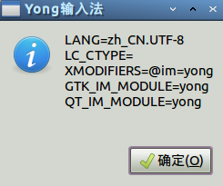
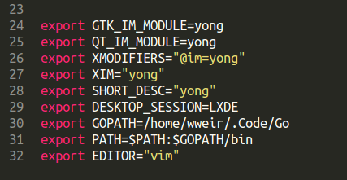

- 对GBK的支持
- linux下输入法问题
- 按快捷键<Ctrl+`>
- 在下面出现的输入框中输入以下内容
- 重启Sublime
- 按快捷键<Ctrl+Shift+P>
-
输入
install, 在输入框下面的选项中选择Package Control:Install Package
Sublime Text
很久之前就用过这个编辑器，不过主要是学习的linux终端下编程，也就没怎么用。不过说起来，Sublime Text可真是前端利器，用起来可真不错。
不过有用起来有两个问题一直困扰着我，相信也使不少其他用户不爽，就是:
这两个问题绝对是硬性问题，不过也都不是什么困难问题。不过，我很困惑网上的解决方案大多千篇一律，而且方法并不是全面, 对linux下的Sublime用户的支持还不够，这也就是写这篇文章的原因了。下面就是我对这两个问题的解决办法，这方法都是sublime text 2和3两个版本通用的。
虽然网上已经有很多安装Package Control的方法，不过我还是得在这里提一下：
Sublime Text 2
import urllib2,os; pf='Package Control.sublime-package'; ipp = sublime.installed_packages_path(); os.makedirs( ipp ) if not os.path.exists(ipp) else None; urllib2.install_opener( urllib2.build_opener( urllib2.ProxyHandler( ))); open( os.path.join( ipp, pf), 'wb' ).write( urllib2.urlopen( 'http://sublime.wbond.net/' +pf.replace( ' ','%20' )).read()); print( 'Please restart Sublime Text to finish installation')
Sublime Text 3
import urllib.request,os; pf = 'Package Control.sublime-package'; ipp = sublime.installed_packages_path(); urllib.request.install_opener( urllib.request.build_opener( urllib.request.ProxyHandler()) ); open(os.path.join(ipp, pf), 'wb').write(urllib.request.urlopen( 'http://sublime.wbond.net/' + pf.replace(' ','%20')).read())
增加sublime对GBK的支持
如网上所说安装ConvertToUTF8, 有时安装这个以后，Sublime已经可以很好支持GBK了。如果没有效果，请安装Codecs33,当然Sublime Text 2下请安装Codecs26。这样你就可以好好享受Sublime了。
这里博主没有选择网上流行的另一个与ConvertToUTF8差不多的GBK Encoding Support是因为以前博主试的时候这个Package对中文标题的支持有问题，而且没有Sublime Text 3 的版本。
解决linux下中文输入问题
网上盛传一大堆害死新人的方法，比如：
- 自己编译libsublime-imfix.so
- 安装input helper
不能说这些方法没有作用，不是副作用太大就是对新人难度太高
其实只要在自己的桌面环境中加入相应的环境变量就可以了，下面就是我的变量信息

我的是在~/.profile文件中加入的

这样，你就可以自由使用fcitx(sogou), ibus或者其它任何你喜欢的输入法。当然，这样做也不是没有缺陷, 在Sublime Text 3中仍然无法做到光标跟随，不过这个影响太大。而编译的方法据说可以解决光标跟随问题，不过我在Lubuntu13.10+Sublime
Text 3下测试没有成功，博主也不使用那个sogou(fcitx)输入法，就没有深入研究。
2013年12月18日 星期三 22时15分42秒